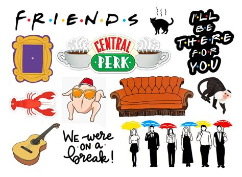

La historia da inicio en un café de Nueva York, Central Perk, en el cual se encuentran los personajes: Mónica Geller, Chandler Bing, Phoebe Buffay y Joey Tribbiani; donde también se incorporan con el paso de los minutos Ross Geller y por último Rachel Green. Este encuentro da comienzo a una etapa donde seis amigos viven en la ciudad de Nueva York.
Es una comedia basada en la amistad, los buenos y malos momentos como: los triunfos, el amor, el pasado y el futuro.
